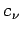

Quadraturformeln vom GAUSS-Typ sind Mittelwertformeln, aber im Ansatz
werden nicht nur die Koeffizienten , sondern auch die Stützstellen  als freie Parameter aufgefaßt. Diese werden so bestimmt, daß die Formel (19.81) für Polynome möglichst hohen Grades exakt ist.
als freie Parameter aufgefaßt. Diese werden so bestimmt, daß die Formel (19.81) für Polynome möglichst hohen Grades exakt ist.
Die Erfahrung zeigt, daß Quadraturformeln vom GAUSS-Typ meist sehr genaue Näherungen liefern, dafür müssen aber ihre Stützstellen sehr speziell gewählt werden.